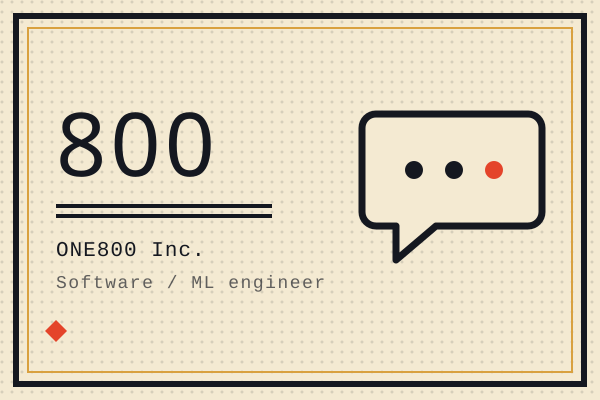
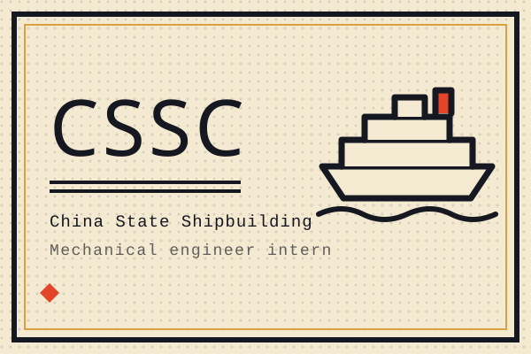
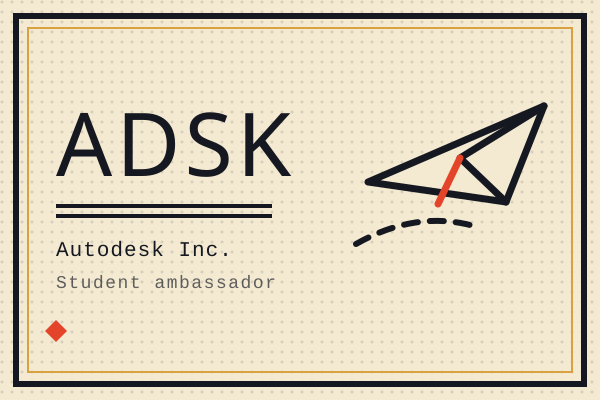

Film-grade robotic camera motion is astonishing, and priced out of reach — professional camera-motion rigs run well into six figures. I am building a mobile cinema robot arm that flips that equation: portable enough to carry onto any set, affordable enough for independent creators, simple enough to run without a technical crew. My work spans the actuators and firmware, the kinematics and shot planner, and the company around them.


A peer-to-peer international logistics platform on one idea: anything, from anywhere — carried by people, not corporations. Buyers request items from any city; travellers already flying that route bring them home, with live door-to-door tracking and a verified handoff. I built and launched the iOS MVP in under two months on Swift, React and Firebase, and led three cofounders across product, marketing and finance for China–North America–Europe routes.

Put a large language model where older users already are: inside iMessage, with no app to install. With a ten-person engineering team I built an Apple-approved iMessage integration handling text, images and voice memos, multilingual LLM pipelines for transcription, translation, OCR and generation, and a LangChain + Redis memory layer that gave the conversational agents both short- and long-term recall.

Designed HVAC subsystems for China's first domestically built 12-deck cruise ship, working in CADMATIC and Bentley alongside the shipyard's engineering teams. Patented a high-efficiency spray-nozzle fire pipeline: CFD tests showed 80% water savings and 67% faster fire response than the baseline system.

Founded and led the Fusion Design Association, teaching students Fusion 360 — CAD, CAM and generative design — and the manufacturing workflows around them. Mentored 30+ students and ran an annual 3D-printed glider competition, including the custom engineered launch system it flew from. The generative-design habit stuck: it shows up in the unicycle robot and in every printed bracket since.
Research positions — Machine in Motion Lab at NYU, MABEL, the multi-robot transport work, STARS, DGP, KITE — live on the CV, next to education and the full toolbox.